Jim Henson, creator of the Muppets, was born 90 years ago today. Name each character.
1Kermit the Frog
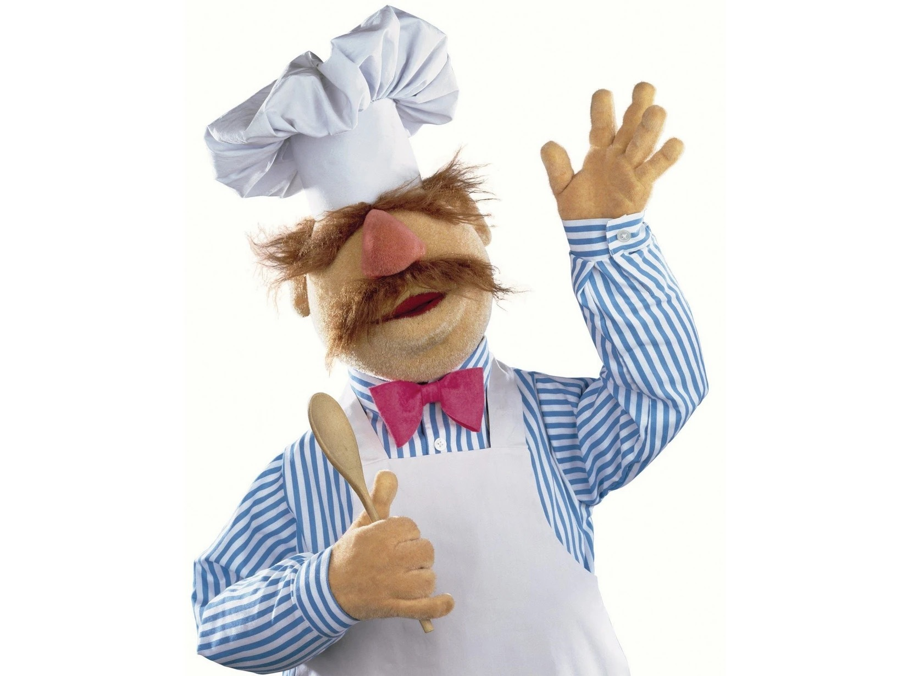
2The Swedish Chef (accept Swedish Chef)
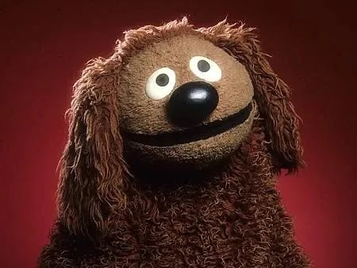
3Rowlf the Dog (accept Rolf)
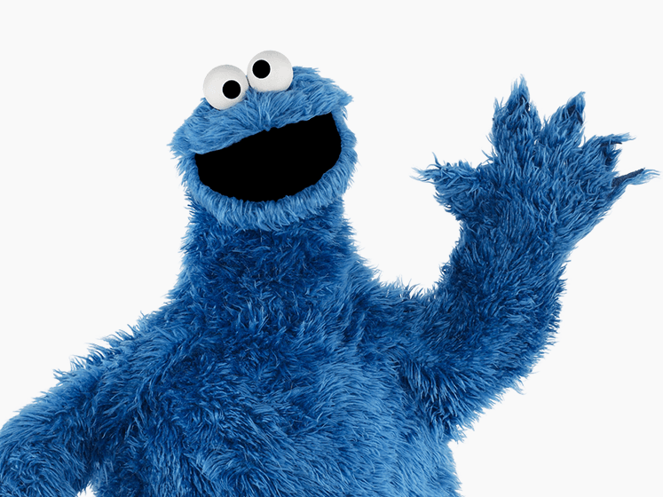
4Cookie Monster
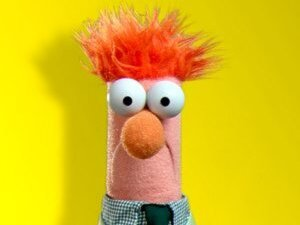
5Beaker
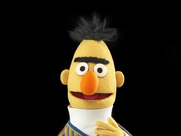
6Bert
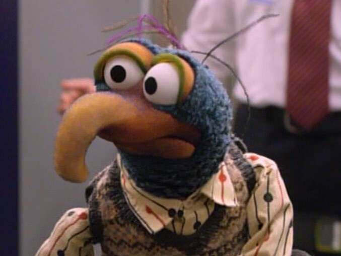
7Gonzo (accept The Great Gonzo)
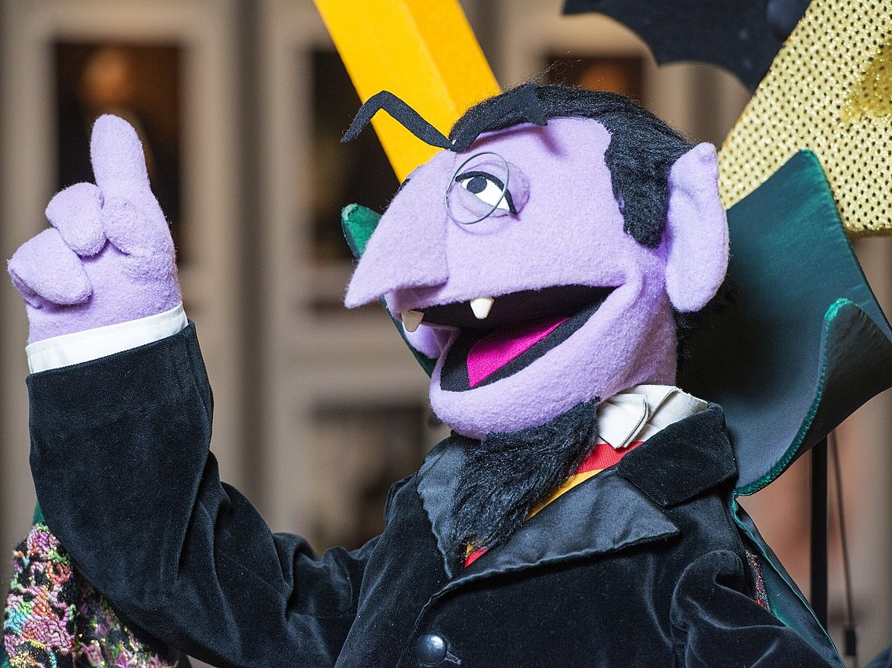
8Count von Count (accept the Count)9Elmo
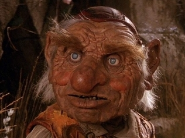
10Hoggle (Labyrinth)
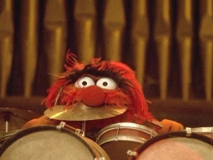
11Animal
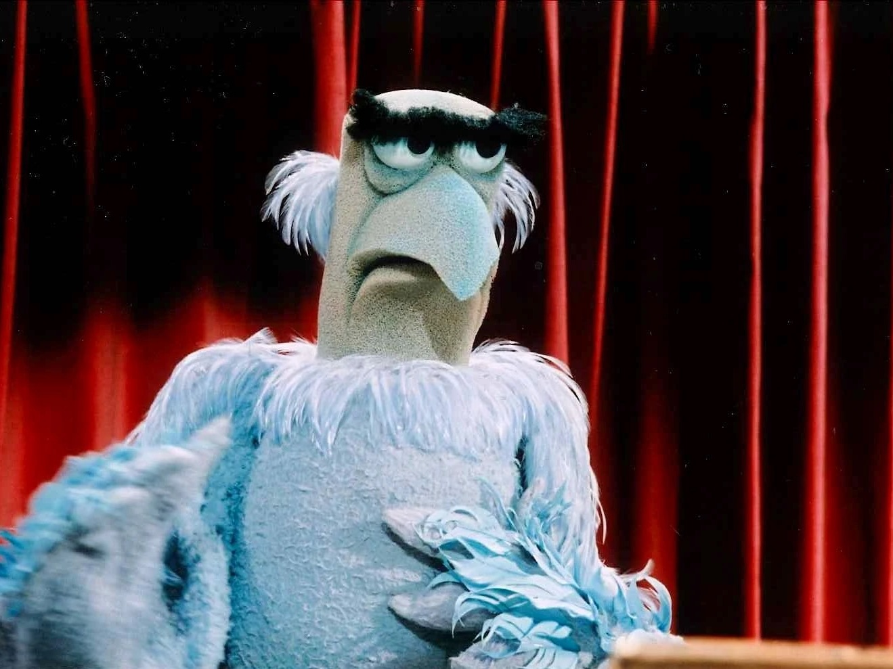
12Sam the Eagle (accept Sam Eagle)
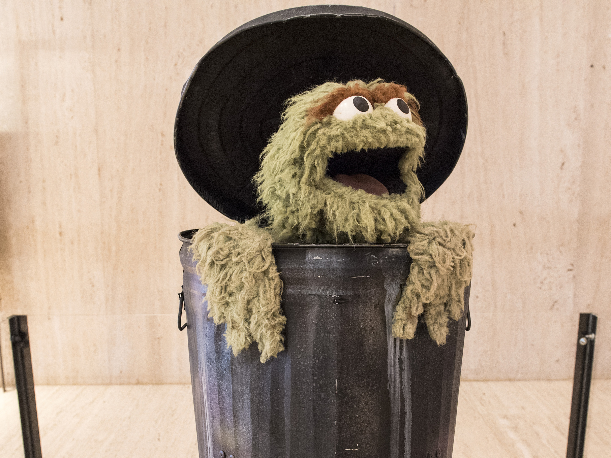
13Oscar the Grouch
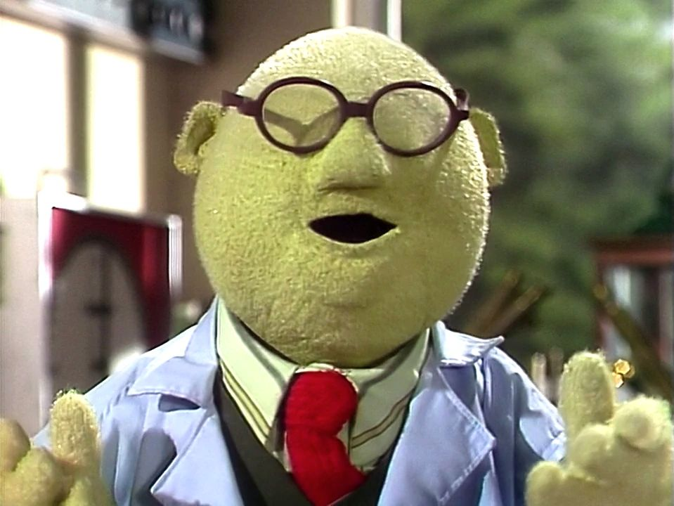
14Dr Bunsen Honeydew (accept Bunsen, Dr Honeydew)
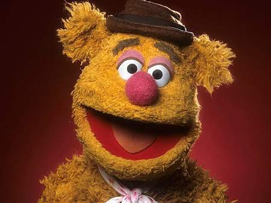
15Fozzie Bear
Round 2 - Film Taglines__ / 10
Which film had this tagline on its poster?
"You'll believe a man can fly."
a) Flash Gordonb) Driving Miss Daisyc) Superman
1978
"You don't get to 500 million friends without making a few enemies."
a) The Social Networkb) Cast Awayc) The Wolf of Wall Street
2010
"Fear can hold you prisoner. Hope can set you free."
a) The Green Mileb) The Shawshank Redemptionc) Mamma Mia!
1994
"Just when you thought it was safe to go back in the water..."
a) Jawsb) Jaws 2c) The Little Mermaid
1978
"He is afraid. He is totally alone. He is 3 million light years from home."
a) E.T. the Extra-Terrestrialb) Home Alonec) Close Encounters of the Third Kind
1982
"The true story of a real fake."
a) The Talented Mr Ripleyb) Chicken Runc) Catch Me If You Can
2002
"Collide with destiny."
a) Titanicb) Speedc) Babe
1997
"Just because you're invited, doesn't mean you're welcome."
a) Meet the Parentsb) Get Outc) The Sound of Music
2017
"He's the only kid ever to get into trouble before he was born."
a) Gandhib) Look Who's Talkingc) Back to the Future
1985
"Man is the warmest place to hide."
a) Alienb) The Thingc) Frozen
1982
Round 3 - Answer Smash__ / 10
Two clues per question; the two answers "smash" together into one overlapping phrase (e.g. "Elton John Lewis", "Buda-pesto").
The boy who never grew up / Eaten on Shrove Tuesday? Peter Pan-cake
Rowan Atkinson character / Squashy seat? Mr Bean Bag
Bear from Peru / Former Chief Scout? Paddington Bear Grylls
Vodka and tomato cocktail / Former Bake Off judge? Bloody Mary Berry
London bell / Batman actor? Big Ben Affleck
BBC time traveller / Chris Tarrant quiz show? Doctor Who Wants to Be a Millionaire
ABBA song / EastEnders pub? Dancing Queen Vic
Former Prime Minister / 1999 shaky camera horror film? Tony Blair Witch Project
British F1 champion / Scottish football club? Lewis Hamilton Academical (accept Damon Hill / Graham Hill of Beath Hawthorn)
First Harry Potter book / Manchester band behind I Wanna Be Adored? Harry Potter and the Philosopher's Stone Roses (accept Sorcerer's Stone)
Round 4 - Three Songs, One Album__ / 10
Name the artist and the original studio album all three songs come from. Half a point for the artist, half a point for the album.
Wanna Be Startin' Somethin', Billie Jean, Beat It Michael Jackson, Thriller
Go Your Own Way, Dreams, The Chain Fleetwood Mac, Rumours
Smells Like Teen Spirit, Come as You Are, Lithium Nirvana, Nevermind
Sir Duke, I Wish, Isn't She Lovely Stevie Wonder, Songs in the Key of Life
Wonderwall, Don't Look Back in Anger, Champagne Supernova Oasis, (What's the Story) Morning Glory?
Come Together, Something, Here Comes the Sun The Beatles, Abbey Road
Running Up That Hill, Cloudbusting, The Big Sky Kate Bush, Hounds of Love
Shake It Off, Blank Space, Bad Blood Taylor Swift, 1989
Once in a Lifetime, Born Under Punches, Crosseyed and Painless Talking Heads, Remain in Light
Rehab, You Know I'm No Good, Tears Dry on Their Own Amy Winehouse, Back to Black
Round 5 - Around the World__ / 10
Which Asian country is the world's largest landlocked country? Kazakhstan (2.72 million km²; its Caspian coast doesn't count, because the Caspian is a lake)
Which river flows through Belgrade and Bratislava? The Danube (it also flows through Vienna and Budapest)
What is the smallest country in the world? Vatican City (about 0.44–0.49 km²)
What is the capital of Australia? Canberra
Lake Titicaca lies on the border of Peru and which other South American country? Bolivia
What is the highest mountain in Africa? Kilimanjaro (about 5,895 m, in Tanzania)
In total length, the world's longest international border is between which two countries? Canada and the United States (8,891 km, including the Alaska border; Russia–Kazakhstan is the longest continuous land border)
Which mountain kingdom is completely surrounded by South Africa? Lesotho
Which Himalayan country has the only national flag that is not four-sided? Nepal
Which US state is closest to Africa? Maine (Quoddy Head to El Beddouza, Morocco)
Round 6 - General Knowledge__ / 20
Which planet is closest to the Sun? Mercury
Feta cheese comes from which country? Greece
What was Paul McCartney's main instrument in the Beatles? Bass guitar (accept bass; refuse "guitar" alone)
This Saturday's full moon is the one nearest the autumn equinox. What is it traditionally called? The Harvest Moon (refuse Hunter's Moon, Corn Moon)
Which English king was killed at the Battle of Hastings in 1066? Harold II (accept Harold, Harold Godwinson)
What runs through the middle of a gala pie? Hard-boiled egg (accept egg)
Who replaced Prue Leith as a Bake Off judge when the new series began on Tuesday? Nigella Lawson
Which European country's name means "black mountain"? Montenegro (accept Crna Gora)
Which band held its first practice fifty years ago tomorrow, on 25 September 1976, in a kitchen in Ireland? U2
Which element makes up most of the air we breathe? Nitrogen (about 78%; oxygen is about 21%)
What is a young hare called? A leveret
What is the whisky lost to evaporation from the cask called? The angels' share (refuse the devil's cut)
Strictly Come Dancing returned on Saturday with a new presenting team. Name any one of its three new presenters. Emma Willis, Josh Widdicombe or Johannes Radebe (refuse Tess Daly, Claudia Winkleman)
Mr Blobby first appeared in 1992 on which Saturday night BBC show? Noel's House Party
Which chocolates, typically bought in large tins, are named after a J. M. Barrie play? Quality Street (after his 1901 play; Mackintosh's launched them in 1936)
Which country has won the men's Rugby Union World Cup the most times? South Africa (4: 1995, 2007, 2019, 2023)
In Men in Black, what is the memory-wiping device called? The Neuralyzer (mark on sound)
In your car's satnav, what does GPS stand for? Global Positioning System (refuse "Global Positioning Satellite")
Simon & Garfunkel made their first record, in 1957, under what name? a) Ren and Stimpy b) Tom and Jerry c) Rocky and Bullwinkle b) Tom and Jerry (refuse the Peptones)
Which English artist painted The Hay Wain? John Constable (1821; it hangs in the National Gallery)
 1Kermit the Frog
1Kermit the Frog 9Elmo
9Elmo